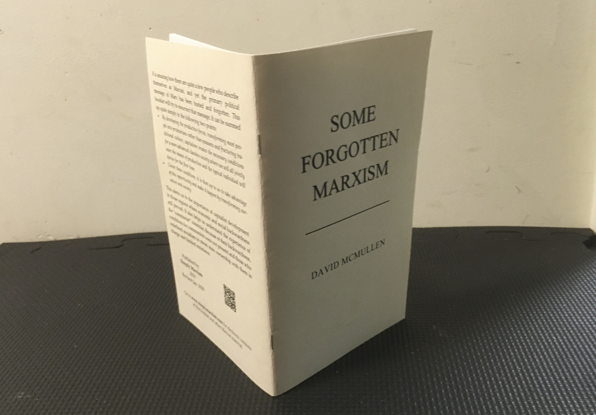

Tweet
Comments and discussion at our Facebook Page
Starting the Real Human Journey
A five-minute introduction to Marx's Communism.
A Marxist Response to the CEA’s Report “The Opportunity Cost of Socialism”

By setting out the full range of confusion on the subject of socialism, the report by the Council of Economic Advisers (CEA) has provided a good opportunity to both explain and defend the Marxist view on the matter.
Marx was No Green

However, the "ecological Marxist" John Bellamy Foster at Monthly Review seems to think he was.
Red and Green at Odds

Greens believe that the global abundance required to lay the basis for communism is unachievable because of "limits to growth" or "planetary carrying capacity".
Hayek’s The Road to Serfdom Destroys a Straw Man

Social ownership does not require a dictatorship deciding what we consume, and where we work and live. Nor does it require all economic decisions to be centrally directed; especially not by a dictator.
Free Health Care after the Revolution
Health care is not like other consumption and distortions from high tax rates will not be a problem.
Preprint at SocArxiv A socialist price system, answering the Austrians
Communist Manifesto Online

The best source is marxists.org. As well as the web version, they also have it in audio, Word, PDF, mobi and prc formats.
What is Communism?

Socialism and Communism

What do Marxists mean by socialism and how does it relate to communism?
A Genuine Left would Support Western Civilization

This is an opinion piece that was prompted by the spectacle of pseudo left academics at Australian universities preventing the introduction of a course on Western civilization. It would have been funded by a conservative organization.
In sum, the left differs from conservatives in wanting to take it to the next level while the pseudo left just want to whine about how European history is nothing more than a saga of injustice.
Marx Supported Capitalist Globalization

This is just another instance where Marx and the "Marxists" are not on the same page.
Debunking the Austrian Economics Socialist Calculation Problem

There is nothing about social ownership that prevents the use of a decentralized price system to guide the transfer of goods, or delivery of services, from one establishment to another. And there is nothing about social ownership that rules out having numerous establishments in the same industry all trying different ways to reduce cost and produce better products.
A Model of a Socially Owned Economy that Relies on Decentralized Prices - a challenge to the “Austrians” on economic calculation
Challenging the view that the Austrian School economists won the socialist economic calculation debate.
Some Forgotten Marxism
A booklet
Marxism has a key political message that "Marxists" ignore. Capitalism creates the prerequisites for a future classless society, particularly through the prospect of shared prosperity. However, it is then up to us to take advantage of this opportunity and make it happen by transforming ourselves and society.
Down with the "Communist" Tyrannies!
The “communist” tyrannies in China, North Korea, Vietnam and Cuba must be overthrown just like other tyrannies. However, they are of special interest to Marxists. Examining how these counter-revolutionary abominations emerged opens up scope for explaining the nature of the proletarian revolution and the challenges it faces.
Karl Marx Turns 200
Article from May 2018
Marx's birthplace.
The "death of communism" confirms his views.
Hasn't Communism already Failed?

No. Marxism shows how communism can only emerge from advanced capitalism. It could not be expected to emerge from the backward conditions that existed in regions such as Russia and China in the first half of the 20th century.
What failed was a transition process that only took the first steps before succumbing to the unfavorable circumstances and to bad actors.
Go here for more on this question.
Check out our YouTube Channel

or the Podcast Version
Are Libertarians being Unrealistic Utopians?
There is a good case for saying that free-market, limited-government libertarians believe in an unrealizable version of capitalism. Indeed, much of the evidence is in their own writing.
'Fully Automated Luxury Communism': Communism's Coming of Age
A review of the Aaron Bastani book

It has to be a game changer when a book espousing communism is the talk of the town. It has done this by putting the discussion on a firm footing. Communism is luxury for all and the end of toil.
The Principles of Communism

This is a short and very readable piece written by Frederick Engels in 1847 and is a precursor to the The Communist Manifesto.
Ayn Rand is Wrong. Communism does not Sacrifice the Individual to Society

The altruism of communism is not self-denial but mutual regard.
We can do better than Capitalist Liberty

Email: contact@simplymarxism.com